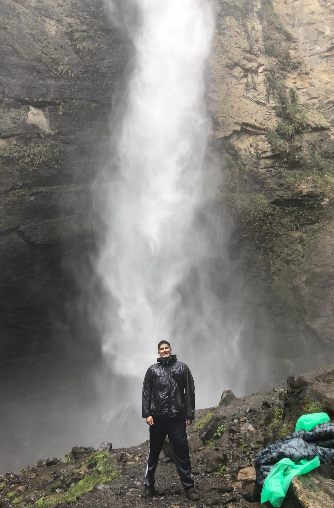

Antonio Silva's personal website.
This website is for the class CS50. It contains random information about myself and its only purpose is educational.
All the information in this belongs to the creator.
- 4th-year Computer Sciences Student at the University of Oregon.
- Born in Lima, Peru.
- Fluent English and Spanish.
- Experience in C++, Java, SQL, and Python
- Passionate about technology.
- Community Living.
- Caregiver for elderly.
- Amateur Photographer